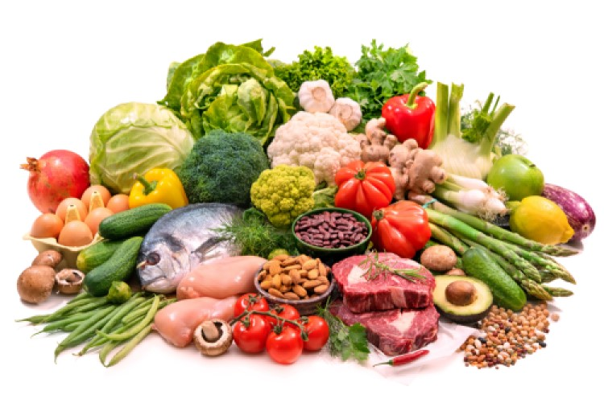

Gluten-Free Gastronomy
What is Gluten-Gree-Gastronomy
Gluten-free gastronomy is the art of selecting, cooking & eating good gluten-free food. The Gluten-free diet is easy and a lot of fun. The vital key is knowing which ingredients to choose. Then,using the correct methods. And finally, develop recipes for your palette from gluten-free cuisine.
Gluten-free food delight in it every day
About the Gluten-Free Food Culture
The gluten-free food culture has become increasingly rich and unique. But it still has many more secrets to discover about this culinary art. From finding where to get gluten-free ingredients to learning how specific cooks' ingredients change a good recipe into a fantastic one. Or using equipment and tools in a new and non-traditional way. And then finally, transferring these learnt new skills to create new recipes.